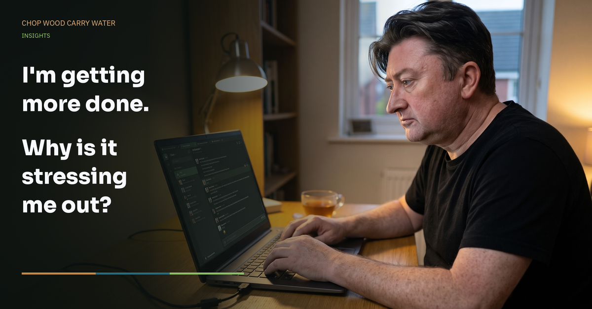

Working with AI · 12th November 2026
I'm getting more done. Why is it stressing me out?
Working with Briar is helping me do more project work. I’m still having to keep too much of it in my head.

I’m finding that I can do much more project work with Briar, the AI assistant I’m building. We work together on software and electronics, and we have several jobs moving at once. But I think I’m running into cognitive overload, switching between them to monitor what’s happening and make sure they stay on track.
I need to remember what we agreed on each job, what still needs testing and whether Briar has got distracted by something that isn’t needed. When I go back to a chat, I can find myself explaining a requirement again rather than moving the work forward. It feels as though I have more in progress than I can comfortably keep track of, even though Briar is doing much of the work.
We use automation to create and manage shared specification documents and project-management issues, so there is a written record of what we have agreed. But Briar doesn’t always pick up the requirements and decisions recorded there. I still have to remember them and bring them back into the conversation. That is what I mean by cognitive overload here: having the information written down hasn’t stopped me needing to keep it in my head.
Is this encouraging me to keep switching?
I’m wondering whether this way of working also tends to reinforce ADHD behaviours. While I’m waiting for Briar to work on one job, there are always other jobs underway that need checking. I end up jumping between chats to see how each is getting on, with more in progress than I can comfortably keep track of.
This might be a useful way for some people with ADHD to work. Briar could help turn an idea into a first step, keep a record of where we have got to and make it easier to return after doing something else. But I can also see how having several projects available all the time could encourage more switching and leave more work unfinished.
NICE’s ADHD guidance [1] includes shorter periods of focus with movement breaks, reducing distractions and reinforcing verbal requests with written instructions. That doesn’t mean moving to another project is the same as taking a break. Equally, a small laboratory study [2] found lower switching costs in adults with ADHD, so we shouldn’t assume switching is always a disadvantage.
I haven’t found direct evidence that moving between AI agents reinforces ADHD behaviours. I want to understand when switching helps me make progress, and when I’m making it harder to concentrate on getting something finished.
More unfinished work to think about
The switching is only part of it. There is also the work I’m still keeping in my head. I had read that we tend to remember unfinished tasks, then forget about them once they are dealt with. This is often described as the Zeigarnik effect.
When we looked into it, a 2025 review of the research [3] found no overall memory advantage for unfinished tasks, although it did find a tendency to return to interrupted work. So I wouldn’t describe it as a rule that the brain remembers a job until it is done and then forgets it.
There is more directly relevant research linking unfinished work with continuing to think about it outside working hours. A 2026 review [4] found an association between unfinished tasks and work-related thoughts, particularly dwelling on the work in a way that causes distress.
That is closer to what I’m concerned about. Briar helps me move more projects forward, but I still need to remember what each one needs and whether it is actually being dealt with. I think having more of that to keep track of is contributing to the cognitive overload.
Other experiments on unfinished goals [5] found that making specific plans reduced intrusive thoughts and interference with other activities, even before the work was finished.
That makes me question whether recording an issue is enough for me. If I still have to keep checking that Briar is following the requirements, I haven’t really been able to put it down. The problem is not just how many jobs I have open, but whether I can leave them with Briar without having to keep stepping back in.
Why I still have to step in
In my last post, I wrote about having to bring Briar back to the job I had actually asked for. We have changed their instructions and ways of working, which we call the harness. We are still adding unnecessary complexity, though, and I’m still having to intervene too often.
One recent example was an application for updating the software inside a customer’s electronic devices.
We use command-line tools for development and testing. The customer needs a straightforward graphical application they can use without knowing how the devices work internally.
I had to explain that customers should not need to know the identifiers of individual devices. The application should find those and select the software supplied with the release, while allowing the user to choose another file. Updating the controller should not require physically disconnecting its sensors.
I ended up saying:
“This is all FAR TOO COMPLICATED. You need to make the update process much simpler and more automated.”
Briar changed the application to find the devices, fill in the software files and provide one button to update them. That was much closer to what I wanted. Passing the software tests still left us needing to try the complete process on the connected hardware.
We had done substantial work, but I was still having to bring us back to how the customer would actually use it.
The updater is a good example of why specification capture is critical: getting a clear account of what we want before we get too far into building it.
“Make an updater” leaves a lot open. Who is going to use it? What should they have to know? What needs to keep working afterwards? Those questions affect the software we build and the tests we need to run.
Often I start by talking through what I want. Helping me turn that into a clear specification is part of the work I want to do with Briar.
I’m happy for them to ask questions that help us understand the customer’s needs. Having to repeat something we have already agreed is much more frustrating, particularly when we have built something that now needs changing.
We had a more serious example while working on a product that collects pressure readings from several sensors. The readings pass through a controller before reaching the software that displays them. We need to preserve the sensor’s full measurement range throughout that journey, with any conversion into a different output format handled by the controller.
We had specified this, but Briar treated it as a compatibility problem and changed the middleware without making sure the sensor sent the full reading in the first place. I caught that: middleware cannot recover measurement information already lost at the sensor end. If I hadn’t, we could have shipped a product with degraded readings that didn’t meet the specification. Having the requirement written down hadn’t been enough.
I need Briar to keep using those requirements as we build and test, including when deciding whether we have finished.
I’m still concerned about requirements disappearing when a long AI conversation is shortened so the work can continue. This is called compaction. I suspect it contributes to some of the forgetting, but I don’t yet know whether it caused a particular mistake. We can also capture a requirement badly, or write it down and then fail to use it.
I don’t need every exchange loaded back into the chat. I need my later decisions and the results of what we tried kept clearly so we can continue without me reconstructing it. Otherwise I have to keep remembering it myself while trying to concentrate on another project.
We have also been reducing repeated checks and unnecessary material being read into chats. Token usage seems much better now. Tokens measure the text an AI processes and produces, and excessive usage has been a problem for us.
Those changes may be helping, but I haven’t established why usage looks better. I’m pleased to see it, although it hasn’t resolved the amount of work I’m keeping in mind.
Knowing when I can leave a job alone
There are jobs where I have been able to see what we have tested and make a decision about what can wait. We recently got audio and video working on a screen we use for development. Briar worked through the software changes and testing, and I could see the video and hear the sound on the actual device.
There was still some delay between the picture and the sound. I chose to leave that for a separate issue, and we made a development release. We knew what we had checked and what we were leaving for later.
Briar helped us get something working, we tried it, and I could make a decision about the remaining problem. I want more of our jobs to reach that point without needing so much redirection along the way.
I can already get much more done with Briar. I’m now questioning how many jobs I should have underway at once, and what I need to know before I can leave one of them alone. A clear account of what happens next might help, but only if I can rely on us following it.
What I want is to be able to leave one job with Briar and concentrate on another without carrying both in my head.
If you are working this way too, I’d be interested to compare notes on what has helped you do that. Where can you leave the work alone, and where do you still find yourself having to step back in?
References
3. a 2025 review of the research
5. experiments on unfinished goals
(Briar helped draft this)